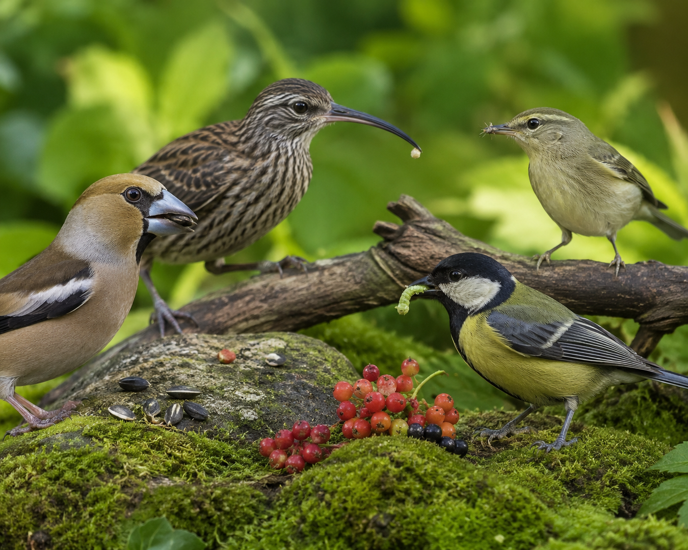
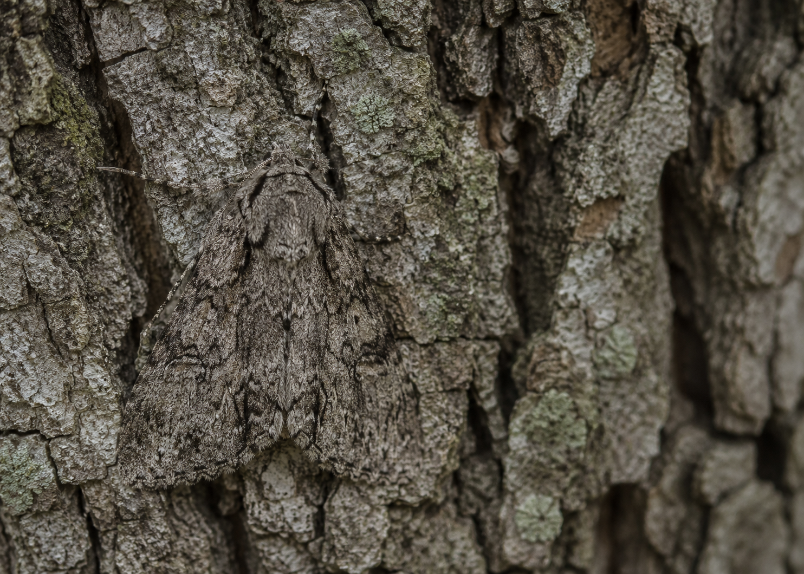

Hold onto this question as you work through the lesson. By the end, you should be able to answer it with evidence.
Start here. Learn the words you will use today.
Look at the photo below. These are all birds — but look at those beaks. Something is different. Before we find out why, just observe.

There are no wrong observations. Good scientists look carefully and ask questions before they try to explain anything. We'll come back to your question at the end.
These are the words scientists use when they study how organisms are different. Tap each card to read the definition. You'll see these words throughout the lesson.
Copy this sentence carefully into your science notebook:
"Organisms of the same species can look different from each other, and those differences can affect how well they survive."
Now learn the main science idea.
Look at a litter of puppies. Same mother, same father — but different spots, different fur colors, maybe different ear shapes. Those differences are called variationvariationDifferences in traits among organisms of the same kind..
Variation happens in almost every species. Some dogs have curly fur; others have straight fur. Some sunflowers grow tall; others stay short. These differences come from the traitstraitA feature of a living thing — like color, size, shape, or behavior. passed down from parents. But not every offspring gets exactly the same set.
Traits don't only come from parents. The environmentenvironmentAll the living and nonliving things that surround an organism where it lives. can shape them too.
A plant that doesn't get enough sunlight grows shorter and paler — even if its parent was tall and green. A dog that doesn't get enough food stays small. The inherited trait sets the starting point, but conditions around an organism can push that trait in a different direction.
Key idea: Some traits come from your parents. Some are shaped by where and how you grow. Many involve both.
Here's where it gets interesting. Sometimes a small difference in a trait gives an organism a real advantageadvantageA trait that helps an organism survive, find food, or reproduce. — and sometimes it doesn't.
A bird with a thicker beak can crack open hard seeds. Where seeds are the main food source, that trait is an advantage. A bird with a longer, thinner beak can reach nectar deep inside a flower. In a place full of flowering plants, that's an advantage instead. Neither beak is better in every place — it depends on the environment.
Real-World Connection: CamouflagecamouflageColors or patterns that help an organism blend into its surroundings. is another example. A moth that blends into tree bark is harder for a bird to spot. That color variation might mean the difference between surviving and not.

Organisms of the same species can have different traits. The environment can influence some of those traits. And sometimes, a trait difference gives one organism an advantage — making it easier to survive and reproduce in that place.
Curious? Go Deeper
Darwin's Finches: In the 1830s, a scientist named Charles Darwin visited a group of islands called the Galápagos. He noticed something strange — there were many types of small birds that all looked similar, but their beaks were very different from each other.
Over time, he figured out that all these birds came from one common ancestor. But on different islands, with different food available, the birds with the most useful beaks survived better and had more offspring. Over many, many generations, the beak shapes slowly changed — different on each island, each matching what food was there.
Scientists today still study these finches. They're one of the clearest real-world examples of how variation and environment work together to shape living things.
Now test the idea yourself.
You'll need: Your science notebook, a pencil, and colored pencils.
You're going to look at the four birds in the photo below. Your job is to observe carefully, record what you notice, and start thinking about what those differences might mean.
Draw a simple chart in your notebook with four columns — one for each bird. Label them Bird 1, Bird 2, Bird 3, Bird 4.
For each bird in the photo above, write at least two things you notice about its beak — the shape, size, or what it seems to be doing.
Now pick one bird. Draw it in your notebook and label the beak. Write a sentence: "This beak might help this bird by ___."
Now think about what you read in the lesson. Go back to your prediction from Step 3. Were you right? Write a note about what evidence supports or changes your thinking.
Think about each question:
Check what you understand.
Show what you learned.
🔍 Part A — Match the Beak
For each beak shape, write which food it helps a bird find. Use what you learned in the lesson.
🚀 Part B — Short Answer
Answer in complete sentences. Use your science vocabulary.
Imagine two butterflies of the same species. One is bright orange. The other is pale brown — almost the same color as dead leaves. They both live in a forest. Which butterfly do you think survives longer? Explain your thinking with evidence from what you learned.
What do you think?
💡 Start with: "I think the ___ butterfly would survive longer because…"
What did you observe or learn that supports your thinking?
💡 Start with: "I know this because the lesson showed…"
Why does that make sense?
💡 Start with: "This makes sense because when an organism blends in…"
📚 Try to use at least one of these words: variation, advantage, camouflage
🎨 Part C — Draw & Label
Draw two animals of the same kind that look a little different from each other. Label at least two traits that are different. Then write one sentence explaining which animal would have an advantage in a specific place — and why.
Submit your work on Canvas using one of these options:
Make sure your submission includes all of these: